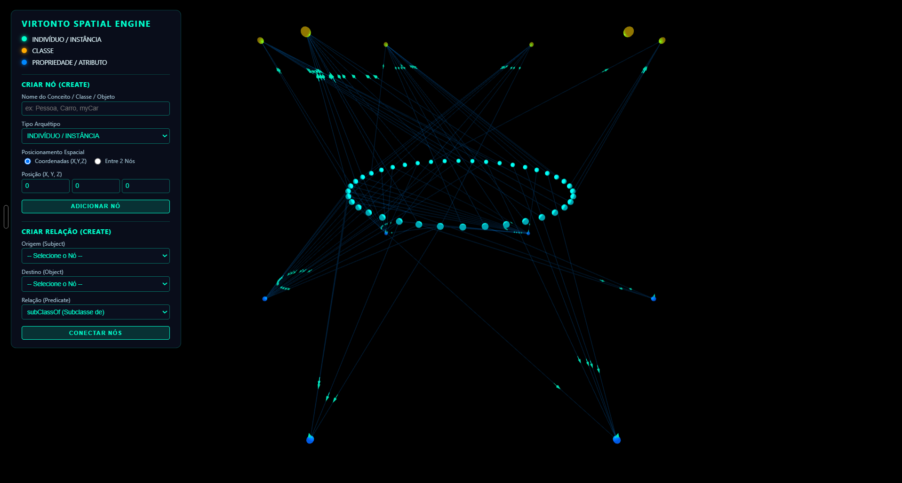
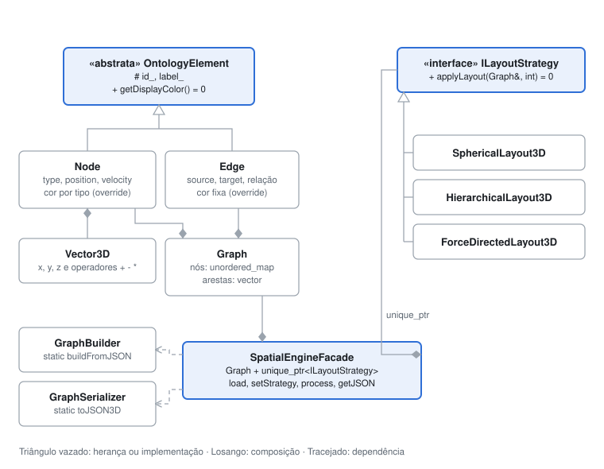

Resumo
Uma ontologia representa conhecimento como um grafo: classes (como Pessoa), indivíduos (como Ana) e propriedades (como temSintoma), ligados por relações. O grafo diz quem se liga com quem, mas não onde cada coisa deve aparecer.
O VirtOnto resolve esse problema com um motor espacial em C++: ele monta o grafo, aplica um algoritmo de posicionamento escolhido em tempo de execução e devolve as coordenadas x, y, z de cada nó. Uma camada web desenha o resultado em 3D com Three.js.
- Classe
- Indivíduo
- Propriedade
O que o sistema faz
Posiciona ontologias em 3D
Lê a ontologia em JSON e calcula a posição de cada elemento.
Três algoritmos de layout
Esférico, hierárquico em camadas e força-dirigida, trocados em tempo de execução.
Cena 3D interativa
Girar, aproximar e explorar nós e relações direto no navegador.
Criação de nós e relações
Painel para adicionar conceitos e ligá-los, inclusive com relações de POO como extends e hasA.
Arquitetura
O motor é dividido em três camadas, cada uma num namespace: model (dados), algorithm (layouts) e service (entrada, saída e a Facade). Motor e visualização conversam apenas por um JSON combinado.

Orientação a objetos no projeto
| Conceito | Onde aparece |
|---|---|
| Classe abstrata | OntologyElement com getDisplayColor() = 0 e destrutor virtual |
| Herança e polimorfismo | Node e Edge herdam e sobrescrevem a cor (override) |
| Interface | ILayoutStrategy, implementada pelos três algoritmos |
| Encapsulamento | Atributos privados com getters e setters; id_ e label_ protegidos |
| Composição | Node contém Vector3D; Graph contém nós e arestas |
| Sobrecarga de operadores | Vector3D com +, -, *, +=, *= |
| Ponteiros inteligentes e STL | shared_ptr, unique_ptr, unordered_map, vector |
| Padrões de projeto | Strategy (layouts) e Facade (SpatialEngineFacade) |
O padrão Strategy em uso: trocar o algoritmo muda o resultado sem alterar mais nenhuma linha.
SpatialEngineFacade engine;
engine.loadOntologyGraph(json);
engine.setLayoutStrategy(std::make_unique<ForceDirectedLayout3D>());
engine.processLayout(300);
std::string saida = engine.getRenderableJSON();Algoritmos de layout
Esférico
Espiral de Fibonacci: distribui os nós de forma uniforme na superfície de uma esfera.
Hierárquico
Camadas por tipo: classes no topo, propriedades no meio, indivíduos embaixo.
Força-dirigida
Simulação física: nós se repelem, arestas puxam como molas, até o sistema estabilizar.
Visualização
A cena usa Three.js: uma cena com os objetos, uma câmera de perspectiva, luzes que dão volume às esferas e um renderizador que desenha tudo várias vezes por segundo.
Vídeo
O vídeo de apresentação será adicionado aqui.
Como executar
mkdir build && cd build
cmake .. -G "MinGW Makefiles" # com Visual Studio: cmake ..
cmake --build .
./ontology_mock_test # gera renderable.json
python -m http.server 8000 # abrir http://localhost:8000